{
"UUID": "42d80d7e-4a44-4115-873c-69703de5fa72",
"Title": "The Food Library",
"ShortDescription": "On sustainability and food security",
"Year": 2021,
"FeaturedWork": "FALSE",
"URL": "the-food-library",
"Modality": [
"Digital",
"Traditional"
],
"Medium": [
"3D modelling",
"Design fiction",
"Speculative design",
"UX design",
"Video",
"Writing"
],
"Tools": [
"Blender",
"Figma",
"Illustrator",
"Photoshop",
"Premiere Pro",
"XD"
],
"Object": [
"Case study",
"Exhibit proposal"
],
"Collaborators": [
"Hershel Nashman"
],
"Keywords": [
"Culture",
"Sustainability",
"Technology"
]
}The Food Library is an interactive exhibit spread across three rooms (Fig. 1, Fig. 2, Fig. 3, Fig. 4), immersing participants in a future world where food security and climate change are addressed by a new urban form: the edible city. Participants engage with elements of this speculative future, exploring audio, visual, and physical prototypes. Through our research we established a list of key insights and created an in-depth systems map, which informed the direciton of this project (Fig. 5).
| * | Title | Size (bytes) | View |
|---|---|---|---|
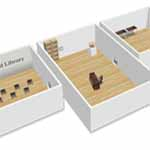 | Floor plan | 255,613 | Load image |
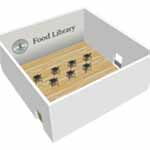 | Room 1 | 145,094 | Load image |
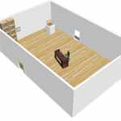 | Room 2 | 159,715 | Load image |
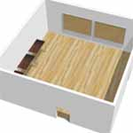 | Room 3 | 191,196 | Load image |
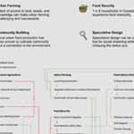 | Takeaways & system map | 234,510 | Load image |
The first room sets the stage for the rest of the exhibit and establishes a strong sense of multi-generational connection through a video telling the story of how this world has come to be. A character from the year 2100 recounts his experiences growing up before, during, and after the establishment of The Food Library. He speaks of the mishandling of climate and food crises and reflects on the social changes required to make the Food Library a reality. Our character, Owen will narrate throughout the whole exhibit.
The second room contains a series of diagetic prototypes, each one an artifact from the Food Library accompanied by a narrated anecdote from Owen.
The food scanner (Fig. 6, Fig. 7, App. A, App. B) is a piece of technology that can scan fresh produce and identify pollutant levels, pesticide residues and more broadly, whether the produce is safe for human consumption. Visitors are able to scan an item and see the results using a custom built user interface.
The preserve shelves (Fig. 8, App. C) are lined with premade meals and preserves, sourced locally from community gardens, stored in standard mason jars. Next to the shelf is an electronic menu (Fig. 9, App. D) that displays a daily rotation of meals prepared by The Food Library. Visitors can engage with the user interface to see the meals available, who made them, and what ingredients were used.
The seed exchange (App. E) is a cabinet with small drawers, each of which contain a specific type of seed local to the area (Fig. 10). There is a tray of small paper bags on top of the cabinet, to bring the seeds home. Next to the cabinet is seed database. Using this device, visitors can search for seeds by their universally unique identifier or by name (Fig. 11, App. F). The database displays information such as interplanting suggestions, pest management, and general growing tips.
| * | Title | Size (bytes) | View |
|---|---|---|---|
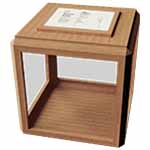 | Food scanner | 587,048 | Load image |
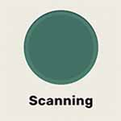 | Food scanner UI | 2,154,901 | Load GIF |
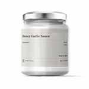 | Preserve jars | 342,771 | Load image |
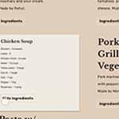 | Menu UI | 2,627,533 | Load GIF |
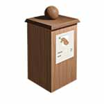 | Seed exchange drawer | 439,787 | Load image |
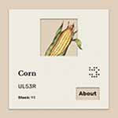 | Seed database UI drawer | 3,085,931 | Load GIF |
| Title | Type | View |
|---|---|---|
| App. A – Owen on the food scanner | YouTube video | New tab |
| App. B – Food scanner prototype | XD prototype | New tab |
| App. C – Owen on the preserves shelves | YouTube video | New tab |
| App. D – Library menu prototype | XD prototype | New tab |
| App. E – Owen on the seed exchange | YouTube video | New tab |
| App. F – Seed database prototype | XD prototype | New tab |
The third room contains an activity meant to foster a deep sense of connection to the future. Towards the goal of helping visitors realize that they have a hand in creating the world for the next generation, instructions prompt them to imagine the future of food for themselves. They can discuss, sketch, and jot down their thoughts, posting them to a cork board which fills one side of the wall, producing an ever-evolving, co-created installation.